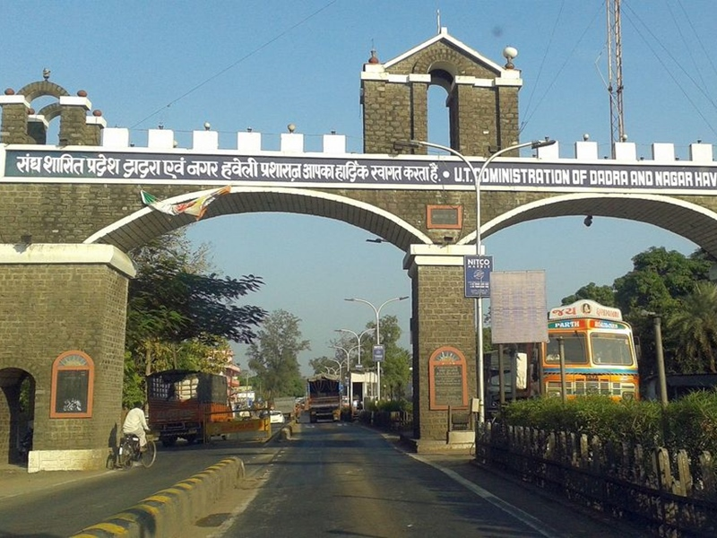
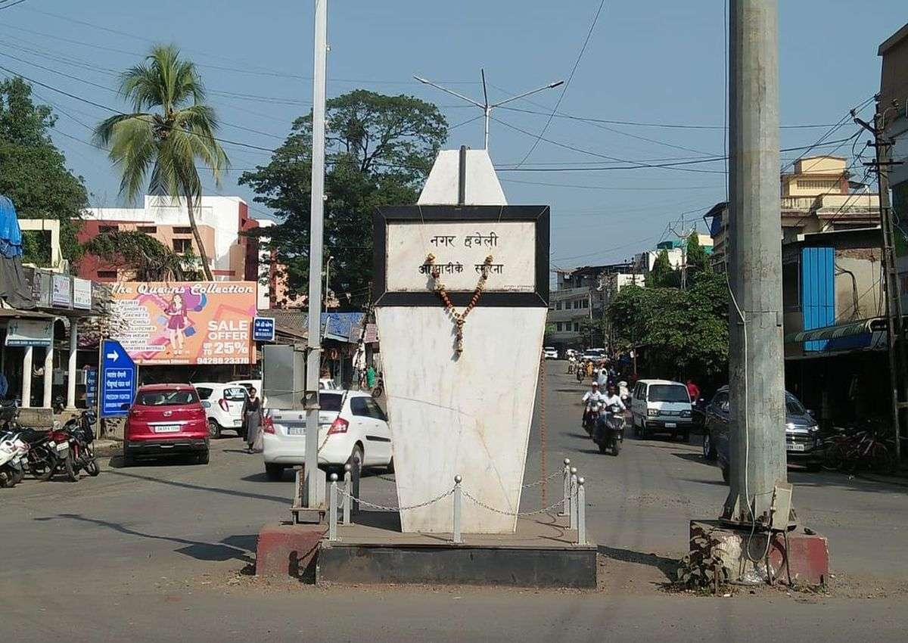

Dadra and Nagar Haveli is a district of the Indian union territory of Dadra and Nagar Haveli and Daman and Diu in western India. It is composed of two separate geographical entities: Nagar Haveli, wedged between Maharashtra and Gujarat and 1 kilometre (0.62 mi) to the northwest, the smaller enclave of Dadra, which is surrounded by Gujarat. Silvassa is the administrative headquarters of Dadra and Nagar Haveli. Unlike the surrounding areas, Dadra and Nagar Haveli was ruled by the Portuguese from 1783 until the mid-20th century. The area was captured by pro-India forces in 1954 and administered as the de facto state of Free Dadra and Nagar Haveli before being annexed to India as a union territory, the union territory of Dadra and Nagar Haveli in 1961.[3] The union territory was merged with the neighbouring union territory of Daman and Diu to form the new union territory of "Dadra and Nagar Haveli and Daman and Diu" on 26 January 2020. The territory of Dadra and Nagar Haveli then became one of the three districts of the new union territory, as the Dadra and Nagar Haveli district.
The area of Dadra and Nagar Haveli is spread over 491 square kilometres (190 sq mi). Its population density is 698 square kilometres (269 sq mi). Though landlocked between Gujarat to the north and Maharashtra to the south, it is close to the western coast of India (between 20°0′ and 20°25′ N latitude and between 72°50′ and 73°15′ E longitude),[15] and the Arabian Sea can be reached via Vapi in Gujarat. Dadra and Nagar Haveli comprises two separate geographical units. The larger part—Nagar Haveli—spans a roughly C-shaped area upriver from the city of Daman on the coast, at the centre of which, straddling the border with Gujarat, is the Madhuban reservoir. The smaller enclave of Dadra is a short distance to the northwest. Dadra and Nagar Haveli is in the middle of the undulating watershed of the Daman Ganga River, which flows through Nagar Haveli and later forms the short southern border of Dadra. The towns of Dadra and Silvassa lie on the north bank of the river. The Western Ghats range rises to the east, and the foothills of the range occupy the eastern portion of the district.
Dadra and Nagar Haveli is surrounded by Valsad District of Gujarat on the west, north, and east, and by Thane District of Maharashtra on the south and southeast (after the division of Thane District, it is now surrounded by the newly formed Palghar District).[16] Maghval is a small enclave village belonging to Gujarat that is located within Nagar Haveli, just south of Silvassa. The nearest railway station are Bhilad & Vapi in Gujarat on the Mumbai-Delhi route ( Western Railways ) .Bhilad is about 14 km west of Silvassa & Vapi is about 18 km northwest of Silvassa. Mumbai is approximately 180 km from Silvassa. Surat city is about 140 km away. Mumbai and Surat are the nearest airports.